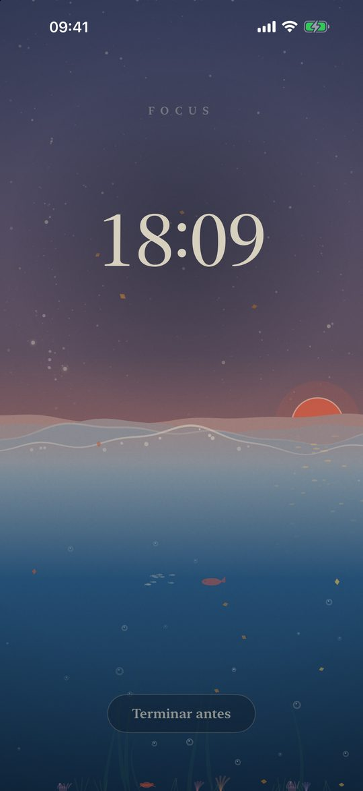
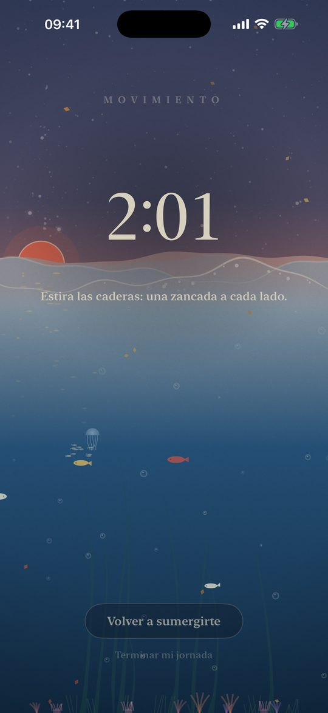
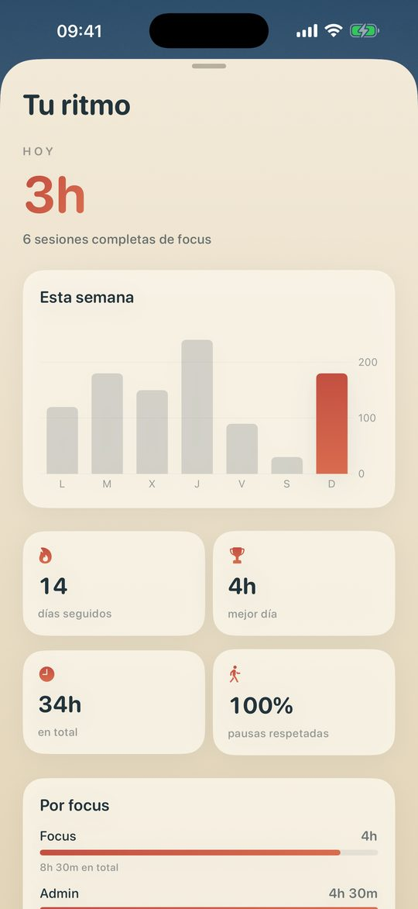

Cadence
Temporizador de focus y bloqueador de apps para iPhone, iPad y Mac.
Treinta minutos de trabajo profundo y luego tres de pie. El mar sube mientras te concentras y baja mientras te mueves, bajo un cielo de estampa vivo que sigue tu día real y el tiempo local.
Descargar en el App StoreDescarga gratuita. El bloqueo es gratis durante tres focus; después, una sola compra lo desbloquea para siempre en todos tus dispositivos. Sin suscripción.

Qué hace
Un temporizador de focus que te hace moverte
Treinta minutos de focus y tres de pausa activa por defecto, ajustable de 10 a 50 minutos. La pausa dura una décima parte del tiempo trabajado y empieza sola, para que te levantes de verdad.
Bloquea las apps y webs que distraen
Elige las apps que bloquear durante un focus con el selector de Tiempo de uso de Apple. Las webs de las redes sociales de tu iPhone también se bloquean, en Safari y en otros navegadores.
Un toque de queda para tus noches
Elige dos horas, por ejemplo las 23:00 y las 7:00, y las apps elegidas se bloquean cada noche, aunque Cadence esté cerrada. En el Mac, una cuenta atrás te avisa diez minutos antes.
Modo trabajo profundo
Cuando lo activas, un focus no se puede terminar antes de tiempo. Decide la campana.
iPhone, iPad y Mac, sincronizados
Una app nativa para Mac con su temporizador en la barra de menús, que oculta las apps que elijas. Tus sesiones, ajustes y toque de queda te siguen con iCloud.
Siri, widgets, Live Activity
Empieza o termina un focus con Siri o desde el Centro de control, y sigue la marea en la Dynamic Island.
Mac

Por qué levantarse cada media hora
Estar sentado no es todo el problema; estarlo sin pausa, sí. Los estudios sobre el tiempo sedentario ininterrumpido (Diaz et al., 2017; Duran et al., 2023) y las recomendaciones de la OMS de 2020 apuntan en la misma dirección: interrumpirlo a menudo. Cadence está construido alrededor de ese ritmo.


Privado por diseño
Sin cuenta, sin anuncios, sin rastreo. Cadence no recoge ningún dato: tu historial se queda en tus dispositivos y en tu propio iCloud.
Preguntas
¿Cómo bloquear apps por la noche en el iPhone?
Activa el toque de queda en Cadence, fija sus horas y elige las apps que bloquear. Cada noche, a la hora indicada, iOS bloquea esas apps hasta la mañana, aunque Cadence no esté abierta.
¿Cadence es un temporizador Pomodoro?
Funciona como uno, con un enfoque de salud: treinta minutos de focus y luego una pausa corta de pie. La duración del focus se puede ajustar.
¿Bloquea webs en Chrome, no solo en Safari?
Sí. Durante un focus, las webs de las redes sociales instaladas en tu iPhone se bloquean en todos los navegadores de iOS, Chrome incluido.
¿Hay suscripción?
No. Cadence se descarga gratis. El bloqueo es gratis durante tres focus; después, Cadence Premium es una compra única que vale para tu iPhone, iPad y Mac.
¿Funciona en el Mac?
Sí, como app nativa del Mac App Store. Oculta las apps que elijas durante un focus y puede cubrir toda la pantalla durante el toque de queda.